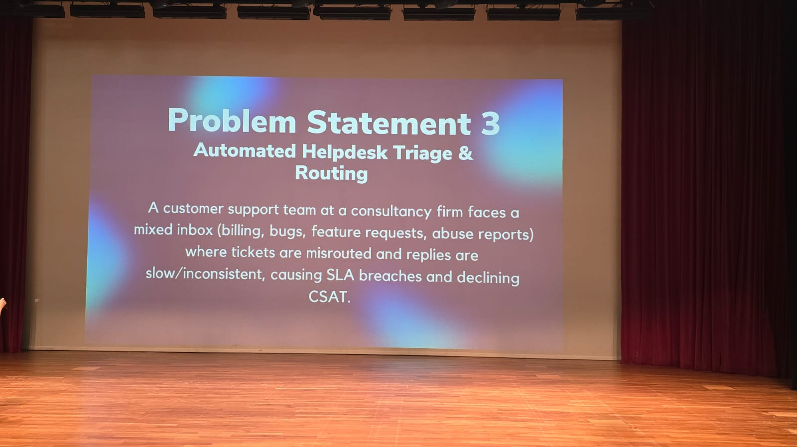
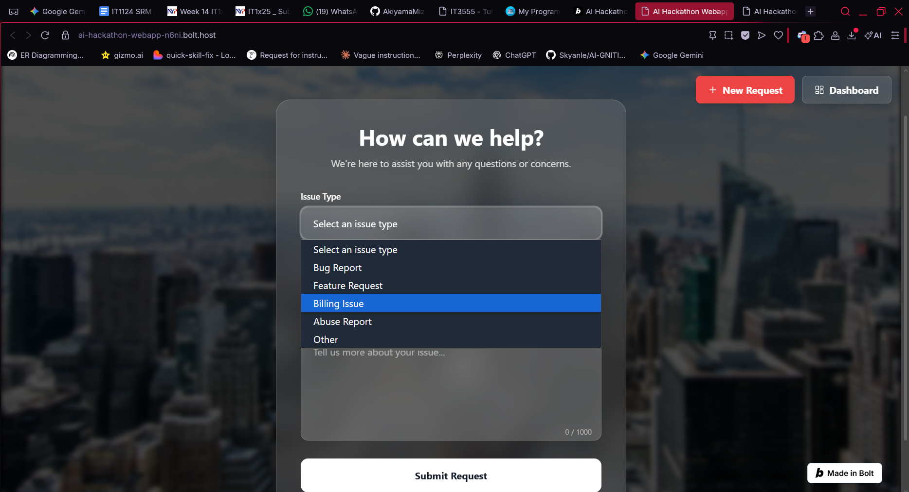
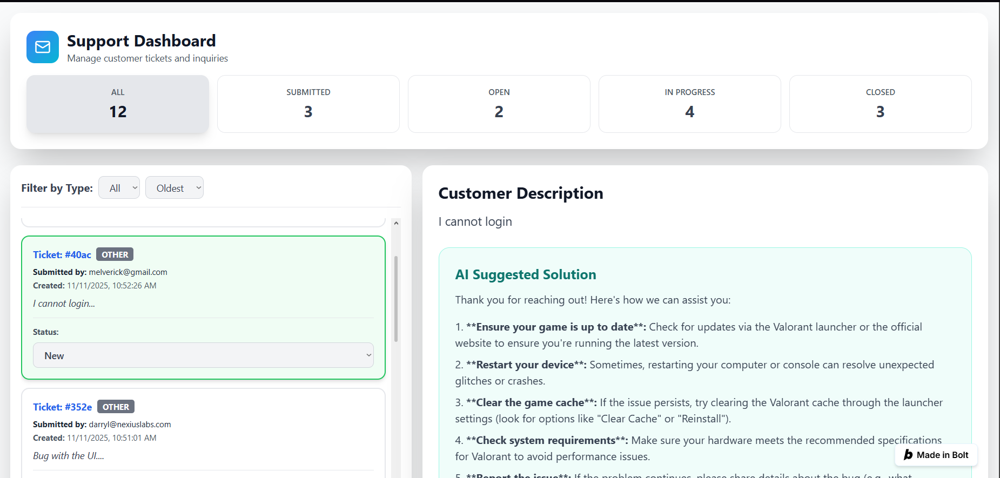

AI-gnition Hackathon 2025
The Problem Statement
The AI-gnition Hackathon challenged us to solve the rising crisis of inefficient enterprise support. Manual ticketing systems were failing under the weight of unorganized requests, causing massive delays.
Our solution was an AI-integrated ecosystem. As the Backend-Frontend Liaison, I focused on making sure the data flow between the AI processing engine and the user-facing forms was flawless.
Our solution was an AI-integrated ecosystem. As the Backend-Frontend Liaison, I focused on making sure the data flow between the AI processing engine and the user-facing forms was flawless.

01. User Submission
This section showcases the user-facing journey. The first view is the Ticket Form where users select their issue type.
The second view highlights the Issue Type Selection dropdown. Here, users can categorize their request as a Bug Report, Abuse Report, or Feature Request. This categorization step is crucial as it tags the ticket immediately, allowing the backend to route it to the correct department without manual intervention.
The second view highlights the Issue Type Selection dropdown. Here, users can categorize their request as a Bug Report, Abuse Report, or Feature Request. This categorization step is crucial as it tags the ticket immediately, allowing the backend to route it to the correct department without manual intervention.


02. Admin Dashboard
Here we see the Admin Dashboard I developed using Flask and Bootstrap.
This is the nerve center where staff manage the ticket lifecycle. I focused on creating a high-density data view that allows administrators to track ticket status and user analytics in real-time. The dashboard is designed for rapid response, ensuring no enterprise request goes unnoticed.
This is the nerve center where staff manage the ticket lifecycle. I focused on creating a high-density data view that allows administrators to track ticket status and user analytics in real-time. The dashboard is designed for rapid response, ensuring no enterprise request goes unnoticed.

03. AI Resolution
The final step is the most innovative part: the Automatic AI Suggested Solution.
Once a ticket is submitted, our backend AI analyzes the issue and provides a recommended fix directly on the admin's ticket view. This reduces the workload on support staff and provides users with near-instant solutions for common technical problems.
Once a ticket is submitted, our backend AI analyzes the issue and provides a recommended fix directly on the admin's ticket view. This reduces the workload on support staff and provides users with near-instant solutions for common technical problems.